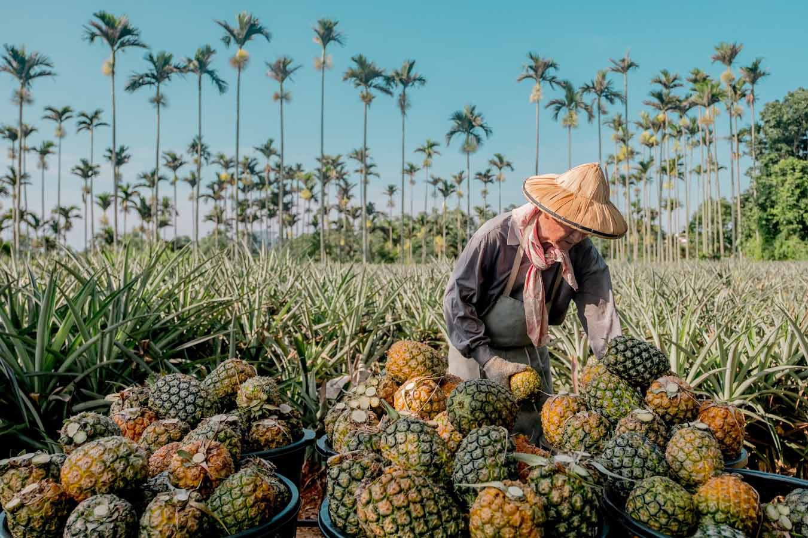

榮貴餅行是社頭鄉老店， 早年以傳統婚嫁大餅為主力商品， 開業至今約45年， 三年多前第二代兩兄弟分開經營， 哥哥另外創立「順貴餅行」承接老父的大餅手藝， 弟弟蕭益能則保留榮貴餅行店名， 並改以土鳳梨酥為主力商品。
就是蕭益能經營餅鋪的中心理念， 這個理念不只表現在確實報稅， 也表現在食材與製程。 不像許多網路名店製程不敢公開， 山腳傳奇的廚房完全透明開放， 從員工削鳳梨、煮鳳梨、包餡、烘烤， 所有製程一清二楚，沒有秘密。
山腳傳奇的土鳳梨酥則是完全只用鳳梨，沒有任何香精或冬瓜等添加物。山腳傳奇的鳳梨大多與當地農民契作，非產季時才轉向台南關廟等地購買。6到8月正值社頭土鳳梨產季，此時的鳳梨香甜且僅帶些許微酸，是最好的品嘗時機，每年此時山腳傳奇平均每天要處理5千台斤左右鳳梨，多餘部分會做餡後冷凍，等非產季時再與其他產地鳳梨混合使用，確保每一口都有社頭鄉土鳳梨滋味。